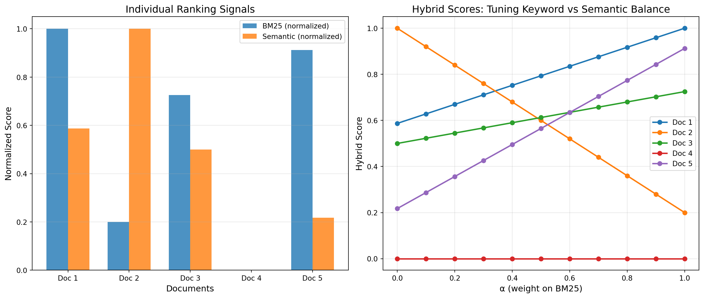

Vector databases are everywhere now - storing embeddings and doing semantic search with cosine similarity. But here’s something interesting: most production vector databases also implement BM25, a 40-year-old keyword search algorithm. Why?
Because pure semantic search has blind spots that BM25 covers beautifully. Today we’re diving into how BM25 actually works, why it complements embeddings, and how hybrid search combines both.
The Problem with Pure Semantic Search
Imagine you’re searching for documents about “GPT-4” in a database. With pure embedding search:
import numpy as npfrom sklearn.metrics.pairwise import cosine_similarity# Simplified: query and document embeddingsquery_embedding = np.random.randn(1, 768) # "GPT-4"doc1_embedding = np.random.randn(1, 768) # Contains "GPT-4"doc2_embedding = np.random.randn(1, 768) # About "large language models"# Semantic similaritysim1 = cosine_similarity(query_embedding, doc1_embedding)[0][0]sim2 = cosine_similarity(query_embedding, doc2_embedding)[0][0]print(f"Document mentioning 'GPT-4': {sim1:.3f}")print(f"Document about LLMs generally: {sim2:.3f}")
Document mentioning 'GPT-4': 0.003
Document about LLMs generally: -0.028
The issue? Embeddings might rate a document about “large language models in general” as more semantically similar than a document that explicitly mentions “GPT-4”, even though you wanted exact matches.
Semantic search fails at: - Exact keyword matches (product codes, names, technical terms) - Rare or new terms the embedding model wasn’t trained on - Cases where word frequency matters (“mentioned 10 times” vs “mentioned once”)
This is where BM25 shines.
What is BM25?
BM25 (Best Matching 25) is a ranking function from the 1970s-90s that scores documents based on term frequency and document length. It’s probabilistic and has solid theoretical foundations.
The formula looks intimidating but breaks down nicely:
Where: - \(N\) = total number of documents - \(n(q_i)\) = number of documents containing term \(q_i\)
Common words like “the” or “is” appear in most documents → low IDF → low contribution to score. Rare terms like “BM25” or “GPT-4” → high IDF → high contribution.
Where \(\alpha\) controls the keyword/semantic balance (typically 0.5).
# Simulate hybrid searchnp.random.seed(42)def normalize(scores):"""Min-max normalization to [0,1]""" min_s, max_s =min(scores), max(scores)if max_s == min_s:return [0.5] *len(scores)return [(s - min_s) / (max_s - min_s) for s in scores]# Simulate scores for 5 documentsbm25_scores = [8.5, 2.1, 6.3, 0.5, 7.8] # Keyword relevancesemantic_scores = [0.72, 0.91, 0.68, 0.45, 0.55] # Embedding similarity# Normalize both to [0, 1]bm25_norm = normalize(bm25_scores)semantic_norm = normalize(semantic_scores)# Calculate hybrid scores for different alpha valuesalphas = np.linspace(0, 1, 11)doc_names = [f"Doc {i+1}"for i inrange(5)]fig, (ax1, ax2) = plt.subplots(1, 2, figsize=(14, 6))# Show individual scoresx = np.arange(len(doc_names))width =0.35ax1.bar(x - width/2, bm25_norm, width, label='BM25 (normalized)', alpha=0.8)ax1.bar(x + width/2, semantic_norm, width, label='Semantic (normalized)', alpha=0.8)ax1.set_xlabel('Documents', fontsize=12)ax1.set_ylabel('Normalized Score', fontsize=12)ax1.set_title('Individual Ranking Signals', fontsize=14)ax1.set_xticks(x)ax1.set_xticklabels(doc_names)ax1.legend()ax1.grid(alpha=0.3, axis='y')# Show hybrid scores across different alpha valuesfor i, doc_name inenumerate(doc_names): hybrid_scores = [alpha * bm25_norm[i] + (1-alpha) * semantic_norm[i] for alpha in alphas] ax2.plot(alphas, hybrid_scores, marker='o', label=doc_name, linewidth=2)ax2.set_xlabel('α (weight on BM25)', fontsize=12)ax2.set_ylabel('Hybrid Score', fontsize=12)ax2.set_title('Hybrid Scores: Tuning Keyword vs Semantic Balance', fontsize=14)ax2.legend()ax2.grid(alpha=0.3)plt.tight_layout()plt.show()

Notice how different documents rank differently depending on \(\alpha\): - \(\alpha = 1\): Pure keyword search (BM25 only) - \(\alpha = 0\): Pure semantic search (embeddings only)
- \(\alpha = 0.5\): Balanced hybrid
When to Use Each Strategy
Pure BM25 (α ≈ 1.0): - Product catalogs with exact SKUs/model numbers - Legal documents with specific terminology - Code search where exact function names matter - Medical records with precise diagnoses
Pure Semantic (α ≈ 0.0): - Conversational queries with paraphrasing - Multi-language search - Concept-based discovery - When you want “similar ideas” not “same words”
Hybrid (α ≈ 0.5): - General-purpose search - E-commerce (combine exact matches + similar products) - Customer support (find relevant tickets even with different wording) - Most real-world applications
Real-World Performance
Here’s what hybrid search looks like in practice:
Query Type
BM25 Only
Semantic Only
Hybrid
Exact match (“GPT-4”)
✓✓✓
✗
✓✓✓
Paraphrase (“AI chatbot”)
✗
✓✓✓
✓✓✓
Rare terms
✓✓✓
✗
✓✓✓
Typos
✗
✓✓
✓✓
Multi-concept
✓
✓✓✓
✓✓✓
Studies show hybrid search typically improves retrieval metrics by 15-30% over either method alone.
Implementation in Popular Vector DBs
Most vector databases now support hybrid search out of the box:
BM25 isn’t obsolete - it’s complementary. While embeddings capture semantic meaning beautifully, BM25 excels at exact keyword matching and term frequency analysis. Real production systems use both.
The 40-year-old algorithm survives because it solves problems that pure neural approaches don’t: exact matches, rare terms, and interpretable scores. Combined with modern embeddings, you get the best of both worlds.
Next time you’re building search, don’t choose between BM25 and vectors. Use both.